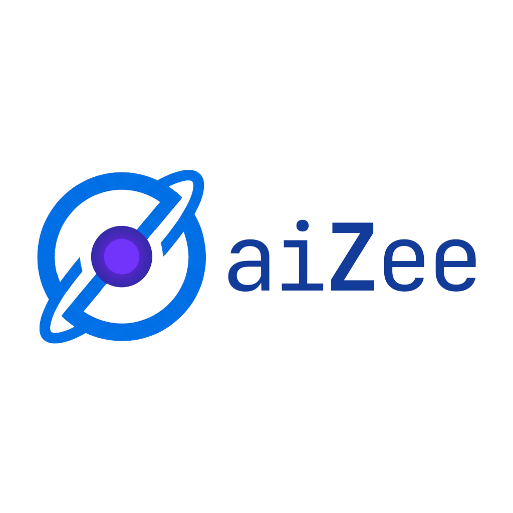

aiZee — The Policy Layer for AI Coding aiZee v5.7.1
5 ★ 139 commits 3561 passed
The policy layer that turns every AI assistant into a Principal Architect.
A zero-compromise, version-controlled OS between you and Cursor / Claude / Copilot / Windsurf. 22 personas, 72 skills, 36 workflows, 163 tech-stack refs — hard-loaded every session to enforce OWASP, SOLID, and exact-version stack. 3561 tests, 95% coverage, hash-chained audit. No context drift. No silent tech debt.
22 Personas 72 Skills 3561 Tests Laravel 13 PHP 8.5 PostgreSQL 17 Qdrant RAG +more